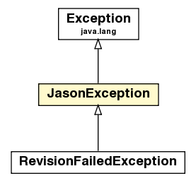

jason
Class JasonException

java.lang.Object
 java.lang.Throwable
java.lang.Exception
jason.JasonException
java.lang.Throwable
java.lang.Exception
jason.JasonException
- All Implemented Interfaces:
- java.io.Serializable
- Direct Known Subclasses:
- RevisionFailedException
public class JasonException
- extends java.lang.Exception
- See Also:
- Serialized Form
|
Constructor Summary |
JasonException()
Creates a new instance of JasonException without detail message. |
JasonException(java.lang.String msg)
Constructs an instance of JasonException with the specified detail message. |
JasonException(java.lang.String msg,
java.lang.Exception cause)
|
JasonException(java.lang.String msg,
Term error)
Constructs an instance of JasonException with the specified detail message
and error description term. |
JasonException(java.lang.String msg,
Term error,
java.lang.Exception cause)
|
| Methods inherited from class java.lang.Throwable |
fillInStackTrace, getCause, getLocalizedMessage, getMessage, getStackTrace, initCause, printStackTrace, printStackTrace, printStackTrace, setStackTrace, toString |
| Methods inherited from class java.lang.Object |
clone, equals, finalize, getClass, hashCode, notify, notifyAll, wait, wait, wait |
WRONG_ARGS
public static final Term WRONG_ARGS
UNKNOW_ERROR
public static final Term UNKNOW_ERROR
JasonException
public JasonException()
- Creates a new instance of
JasonException without detail message.
JasonException
public JasonException(java.lang.String msg)
- Constructs an instance of
JasonException with the specified detail message.
- Parameters:
msg - the detail message.
JasonException
public JasonException(java.lang.String msg,
Term error)
- Constructs an instance of
JasonException with the specified detail message
and error description term.
- Parameters:
msg - the detail message.error - the term that details (in AgentSpeak) the error
JasonException
public JasonException(java.lang.String msg,
java.lang.Exception cause)
JasonException
public JasonException(java.lang.String msg,
Term error,
java.lang.Exception cause)
addErrorAnnot
public void addErrorAnnot(Term t)
getErrorTerms
public ListTerm getErrorTerms()
createWrongArgumentNb
public static JasonException createWrongArgumentNb(DefaultInternalAction ia)
createWrongArgument
public static JasonException createWrongArgument(InternalAction ia,
java.lang.String reason)
createBasicErrorAnnots
public static ListTerm createBasicErrorAnnots(java.lang.String id,
java.lang.String msg)
createBasicErrorAnnots
public static ListTerm createBasicErrorAnnots(Term id,
java.lang.String msg)